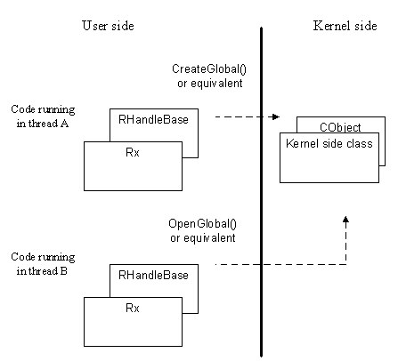

|
| |
This is the issue of Kernel side object visibility.
Handles are said to be local or global.
A handle is local, if the Kernel object which that handle represents is only visible to the thread that created it; no other thread can open a handle to the same Kernel object.
Typically, code constructs the appropriate RHandleBase derived object, e.g. an RMutex, and calls its Create(), CreateLocal() or equivalent function to create the corresponding Kernel object.
A handle is global, if the Kernel object which that handle represents is visible to all threads across all processes; any thread in any process can open a handle to that same Kernel object. Typically, such a Kernel object is intended for sharing.
For a global handle. the corresponding Kernel object is assigned a name. The name gives that Kernel object an identity and is the key property which allows other threads to open a handle onto that same object. It is usual to use a TFindHandleBase
derived class to locate a global Kernel object.
The following diagram shows the general idea.

See also:
Names and fullnames in reference counting objects.
Copyright ©2002 Symbian Ltd. 6.1-00174 |
|